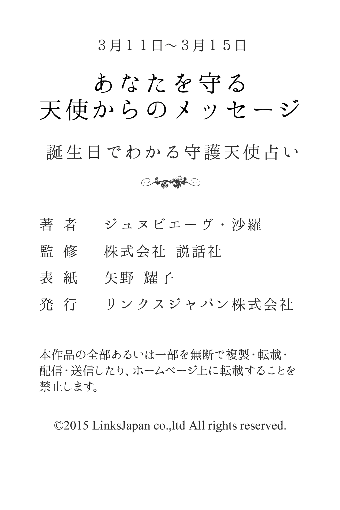

| ３月１１日～３月１５日生まれ あなたを守る天使からのメッセージ 誕生日でわかる守護天使占い (得トク文庫) | |
| ジュヌビエーヴ・沙羅 | |
| (2015) | |

1 、はじめに
「何かに、あるいは誰かに守られている......」
あなたは、そんなふうに感じたことはありませんか？
たとえば、限定発売のお菓子を購入しようと長い行列に並び、最後のたった１つを運良く購入できたり、学生の頃、授業で順々に答えなければいけなくなり、「あー、どうしよう！ 全然わかんないよ」と青ざめて固まっていると、先生があなたを指名しようとした瞬間、終了のベルが鳴り響いたり......
そんなほほえましいエピソードをもつ人もいれば、九死に一生を得るような重大事に遭遇して、心から「助かった！」と安堵のため息をもらした経験を持つ人もいるかもしれません。
そんなとき、あなたが何かに守られているような気がするのは、実は決して気のせいだけではないのです。なぜなら、それは守護天使のおかげだからです。
有名な神学者であり哲学者でもあるトマス・アクィナスは、『すべての人々に、クリスチャンであれ、それ以外の人であれ、たとえ大罪人であっても、あらゆるすべての人々に、決して離れることのない守護天使がついている』と記しています。
そう、守護天使とは、人が生まれてから死ぬまでの一生の間、その人と深く結びつき、保護し、そばにいてくれる天使のこと。あなたの心をより良い方向へと導くために霊感を送り込み、幸せな人生を送るための手助けをしてくれる神秘的な存在です。
さらに、それぞれの守護天使には、固有のキャラクターや得意な守護分野があります。したがって、あなただけを守ってくれる守護天使をよく知り、その言葉に耳を傾けることで、よりあなたらしく生きることができ、真実の幸せの形が見えてくることでしょう。
沙羅

2 、第１章 守護天使のささやき
★あなたの恋愛傾向
小天使ディフィエルに見守られているあなたは、頭脳明晰で潔白な人で、背徳的な恋愛を許せないタイプでしょう。そのため、理屈で割り切れない恋愛感情をどう扱えばいいのかわからず、失敗を繰り返してしまいそうです。大胆に飛び込んでみたのはいいけれど、自ら恋愛のトラブルに巻き込まれ、収拾がつかなくなることもあるでしょう。身近にいる大切な人に気づかず、高嶺の花を追いかけるなど、いつまでも報われません。
★好きなタイプと嫌いなタイプ
あなたは、悠然としていて、頼りがいのある人が好みのようです。何ごとにおいても計画性があり、冷静な判断ができる人にあこがれます。その半面、好奇心ばかりが旺盛で、遊び慣れている人は好みではありません。また、嘘やごまかしをするような人も苦手です。
★最も好むセクシャルな雰囲気
あなたは、やさしく甘えられることに弱く、言葉やしぐさなど、セックスがすぐにでもできるという整った雰囲気の中で誘われることに、最もセクシャルさを感じます。少し大胆過ぎるぐらいに迫られたほうが、燃えやすいと思っているでしょう。
★運命の出会いはどんな人？
あなたの運命の人は、ものごとに対する計画性をもち、常に冷静な判断のできる人でしょう。ものの分別をわきまえている、周囲からの信頼もある頼りがいのある人です。愛する人には誠実であり、とことん親身になってくれるやさしい心をもっています。
★運命の出会いが与える影響力
運命の出会いがあなたに与える影響力は、精神的なものに表れるでしょう。あなたは、どこかしら不本意に感じられるような恋愛をしてきたかもしれませんが、この出会いは、そういった不安などを感じることはないはずです。愛し愛されることの意味を知り、そして満たされ、安心感のある関係を築くことで本来のあなたをとり戻すことができます。そういった精神面での充実が仕事やその他のことでも活かされるようになり、生活自体が活性化され躍動感が出てくるでしょう。
★結婚後の変化
結婚後のあなたは家庭を自分の城と考えて、そこで存分に能力を発揮するでしょう。たとえパートナーの収入が急に減ってしまうようなトラブルがあっても、上手にやりくりして切り抜けていきます。大いに能力を発揮し、パートナーの力になるでしょう。そして、家族にリラックスした空間を提供していくはずです。ただ本来は頭が良く冷静な判断ができる人なのですが、子供のことになると盲目的になってしまう傾向が強いので、その点には注意しましょう。
★好きな恋のシチュエーション
あなたの好きな恋のシチュエーションは、見初めた相手を必死で追いかけているときです。ほとんどの場合、その対象が何らかの問題や障害をもっているケースが多く、だからこそより燃え上がってしまうのかもしれません。頭脳明晰で潔白をモットーとし、背徳的な恋愛など許せないあなただからこそ、理屈で割り切れない恋愛感情の扱い方がわからず、盲目的に恋に走ってしまうようです。高嶺の花に夢中になったり、交際中にも関わらず他の相手に目移りする、といった刺激やときめき感が大好きでしょう。
★どんな人を選べばうまくいく？
あなたは、悠然としていて、頼りがいのあるパートナーを選ぶといいでしょう。計画性があり、冷静な判断ができる人であれば、あなたも動揺することなく、安定したつき合いができるはずです。反対に、日和見主義のタイプを選んでしまうと、刺激的な毎日ではあっても、ストレスがたまってしまうでしょう。また、嘘が嫌いなあなたは、自分のことを親身に思ってくれる、心やさしいパートナーであることも、重要なポイントとなります。心から信頼できる人でなければ、精神的な絆を結ぶことができないでしょう。
★イメージチェンジのアドバイス
あなたは、明るく活発な雰囲気を演出してみるといいでしょう。厳しい表情になりがちなので、メイクでソフトな感じに仕上げることがポイントといえます。また、シャープなヘアスタイルを避け、ウエーブでやさしさを強調したほうが、好感度が増すはずです。
★あなたが恋に感じる幸せ
あなたは、相手が親身になって思ってくれていることがわかると、うれしい気分になります。不安に陥ったり、何ごとかピンチで動揺しているときなど、大きな心で受けとめてもらうと、感激するはずです。そして、時にはあなたをやさしく諌め、正しい道に導いてくれることで、幸せを感じるでしょう。さらに、黙って仕事や人間関係の愚痴を聞いてくれると、心が慰められます。相手がリラックスできる雰囲気を作ってくれることが、喜びとなるでしょう。
★求めているものは何？
恋人関係になったら、あなたは相手に自分のオアシスのような存在になってくれることを求めるでしょう。あなたが壁にぶち当たっているときに、親身になって相談にのってくれたり、やさしく励ましてもらったりすると、相手に大切にされていることを実感し、あなたは幸せな気持ちになるようです。

3 、第２章 大天使の恋予言
★どうすれば幸福な恋を獲得できる？
あなたを守護していてくれる大天使ガブリエルは、「慈愛の天使」とも呼ばれ、あなたにやさしさと穏やかさを与えてくれているはずです。また、あなたが恋愛において危機に陥ったときや、思い悩んだときは、そっとアドバイスを与えながら、守ってくれることでしょう。幸福な恋をつかみ取るには、部屋や職場のデスクなどに、家族や恋人、友人やペットなどあなたにとって大切な存在の写真を飾るといいでしょう。また、フォトスタンドは、外国製のロマンチックなものを選ぶのがおすすめです。
★あなたのセックス傾向
あなたは、セックスで快楽を追求するというより、ぬくもりや愛情を求めて結ばれることを本望としているようです。そのため、一時的な感情やその場の雰囲気に流され、つい関係をもってしまうというケースもあります。基本的には相手の出方を見ながら、上手にベッドに誘っていき、非常にやさしくデリケートなセックスをします。それは、愛情の表現がセックスであり、セックスすることによって愛を確かめているといっても過言ではないでしょう。テクニックは天性のものをもっています。
★あなたが捨てるべき性のこだわり
あなたは、明るく健康的な雰囲気だと、その気になれずに身を固くしてしまいます。どちらかの部屋であっても、ロマンチックで妖しいムードにこだわるでしょう。下着や室内装飾がどうであれ、お互いの気持ちや情熱に身を任せることを心がけてみてください。
★運命の出会いの瞬間
あなたにとっての運命の出会いは、すでにつき合っている相手や、積極的にアプローチをしてきた人の知り合いや友人という可能性が高いでしょう。何となくあなたは気になる存在として感じますが、そのときは他の恋に手一杯という状況だということがあります。
★あなたが与える愛の特徴
あなたは、大きなやさしさで相手を包み込み、深い愛情を与えてあげることができるでしょう。常に相手の立場に立ってものごとを考えてあげられるあなたは、事あるごとに励まし勇気づけ、時には叱咤しながら、いつでも味方でいることを示します。たとえ相手が何かしらの問題を抱えていたとしても、誠心誠意尽くし、自らの愛を全うすることを忘れません。やさしさと穏やかさをもち、愛し愛されることのすばらしさ、そして、ある意味、保護本能というものを存分に感じさせることでしょう。
★運命の出会いを無駄にしないために
あなたが運命の出会いを成就させるためには、運命の相手と他の人たちに対する姿勢に、ある程度の差別化を図ることが大切です。順応性のあるあなたですから、ややもすると誰に対しても、いい顔をし、結果、軌道を外れてしまっては、せっかくの出会いを無駄にしてしまいます。相手を一番、大切に扱い、あなたにとって特別な存在として認め、その人だけには素直で正直な本当のあなたを見せるべきでしょう。不安や悩みなども臆せずにもちかけ、心にゆとりをもつことも重要なポイントです。
★あなたの魅力と弱点
あなたの魅力は、常に相手の立場に立ってものごとを考えてあげられることになります。大きなやさしさで相手を包み込み、深い愛情を与えてあげることができるでしょう。やさしさと穏やかさをもって誠心誠意、尽くし、自らの愛を全うすることを忘れません。ただ、積極的に自分の思いを伝えられず、長い間、片思いを続けてしまう弱点があります。さらに、すでに恋人がいる人や不倫といった、愛のため、あえてトラブルの中に身を投じていく形の愛にのめり込んでしまう傾向もあるでしょう。
★あなたを助けてくれるのは？
あなたを助けてくれるのは、父親や母親になります。テレ臭いかもしれませんが、人生の先輩として、親からアドバイスをもらうといいでしょう。あなたの甘えやわがままも、的確に指摘してくれるとともに、やさしく諌めてもくれるはずです。
★あなたが告白する場合のアドバイス
あなたが告白する場合、計画性をもって行動することが大切です。コロコロと意見を変えていると、相手になかなか気持ちが伝わりそうにありません。周囲の状況などに流されないで、自分の意志を貫く努力をしましょう。告白するチャンスをつくったら、とにかくトライことが肝心です。もち前のサービス精神を活かし、楽しい雰囲気を演出すれば、好印象を与えられます。また、ロマンチックさとセクシーさをつかい分け、ムードづくりを工夫すると、さらに効果的でしょう。
★あなたの恋の問題点
あなたは、自分の思いを相手に伝えられず、長い間、片思いをすることがあるでしょう。自分で「思い切って飛び込んでいけば...」と思ってはいても、タイミングを逃がし、結局、成就はしないことが多いようです。また、すでに恋人や配偶者がいたり、何か問題を抱えた人など、好きになってはいけない人を愛してしまうこともあるでしょう。そんな一途な思いがあるために、リスクを承知で交際を始めたり、愛のためにあえてトラブルの中に身を投じていくといったこともあり得ます。
★幸せな恋のために、あなたが変えたほうがいい点
あなたは、自分からアクションを起こしていかないという姿勢を改めるべきでしょう。片思いを続け、無駄な時間を続けるよりは、しっかり心にケジメをつけて、次の恋をスタートさせたほうが賢明です。また、危険な香りのする人に、のめり込むことも自重したほうがいいでしょう。

4 、第３章 大天使のご神託
★あなたが幸福な恋を見つけるために
あなたは周囲や雰囲気に流されがちなので、注意が必要です。友人の意見に左右されてばかりいては、せっかくのチャンスを逃がしてしまいます。人やなりゆきに任せてばかりいないで、あなたの意志で行動するように心がけましょう。また、甘い誘いに気軽にのっていては、身をもち崩すだけです。本命は誰なのか、自分の気持ちをしっかり確認すること忘れないようにしてください。あなたは、もともとモテるタイプなので、出会いの機会は少なくはないはずです。自分を見失わないことがポイントでしょう。
★不倫関係をどう考える？
あなたは、時と場合によっては不倫関係になってもいいと考えているようです。感受性が豊かで協調性のあるあなたは、普段からモテることでしょう。ある意味、八方美人であるため、家庭をもつ相手であっても言い寄られると断ることができず、その愛を受け入れてしまう傾向があります。自分がモテることをいいことに、なりゆき任せにしてしまう一面が不倫につながってしまうようです。そして、一度、関係をもつと、なかなか終わらせない強い執着心をもっています。
★あなたが不倫関係にはまってしまう理由は？
あなたが不倫関係にはまってしまう理由は、相手に対し「自分のことだけを見つめ、深く愛してくれるのはこの人しかいない！」と思うところにあるようです。意志が弱いあなたは、たとえ恋人がいても他の人から誘惑されると、その場の感情や雰囲気に流されてしまうところがあります。そのため、お互いに熱い気持ちで真剣に愛し合うという経験があまり多くないでしょう。相手はあなたにとって、やっと出会えた理想の人であるはずです。
★あなたに相手から惹かれる理由
あなたが相手に惹かれた本当の理由は、どこか頼りないあなたを守ってあげたいという気持ちが、相手の中に芽生えたからでしょう。サービス精神が豊かで、いつも楽しそうに笑っているあなたですが、なかなか自分の意見が言えずに周囲に流され、結果的に損をしてしまうことが多いようです。相手は、それが見ていられないのでしょう。ロマンチストなあなたの夢を壊さないよう、自分がしっかり支えてあげたいという思いが、相手の中で大きくなっているようです。
★あなたの悪い癖
あなたは恋をすると、自分の愛を貫こうと頑固になって、周囲が見えなくなってしまう傾向があります。そのため、すでに恋人のいる人を好きになったり、不倫だったりすることもありそうです。愛してはいけない人に限って、思いを寄せてしまうといった悪い癖があるでしょう。また、恋愛をなりゆき任せにしてしまうことが多く、恋人以外の異性から巧みに誘われると、一時的な感情やその場の雰囲気に流されてしまうのも問題です。
★あなたは結婚後、浮気をする？
あなたは、パートナー以外の異性と関係をもつことを、あまり特別なことだと思っていないようです。むしろ、人間関係を保つための手段にしているようなところがあるでしょう。そのため、結婚後も当たり前のように浮気を繰り返す可能性があるかもしれません。また、もともと感性が豊かで人づき合いがいいあまり、人に嫌われるのを恐れ、誰にでもいい顔をする傾向がありそうです。その結果、迫られれば拒むこともせず、相手の欲望を承知で、誘いにのっていくことがあります。時には自分から誘うこともあるでしょう。
★あなたが結婚後に望むこと
あなたは、結婚後も自分が大切にされ、守られているということを実感したいと望みます。以心伝心を好むので、派手な愛情表現よりも、そっと肩を抱かれたり、さり気なく手をつないだりというような、何気ないスキンシップに喜びを感じるようです。また、パートナーにオアシスのような存在でいてほしいと望むでしょう。自分が壁にぶち当たったときに、他の誰よりも親身になって相談にのってくれ、やさしく励ましてほしいと思っているはずです。
★あなたは、どんな恋を求めている？
あなたは、自分の気持ちや愛情を全面的に受けとめてくれる相手を激しく求めています。そして、そんな相手がいれば、たちまち恋に落ちてしまうでしょう。あなたを手に入れようとするのなら、できるだけ、そばにいて多くの言葉を交わすことが何よりも大事です。良き話し相手になって、信頼感を得ることができれば、あなたの心をとらえたも同然で、恋愛モードのスイッチも自然に入るでしょう。なお、時期的には、冬から春にかけてと、初秋です。あなたの気持ちが一番、高まります。
★あなたの恋の終わりと始まり
あなたの恋が終わりを告げるとしたら、秘密が生まれてしまったときでしょう。たとえば、他の人とデートしたのを正直に告げられず、心に秘密を抱えたりした場合、あなたは自分を責めるようになり、それが恋の終わりを招いてしまいそうです。また、相手の秘密を知って、そのショックから別れを決断することもあるかもしれません。でも、次の恋は案外、すぐに訪れるでしょう。出会ってまもない相手から、情熱的にアプローチされる可能性が高いようです。なお、その人はかなり年の差があるかもしれません。
★あなたが夢見ている恋の形
あなたが夢見ているのは、やさしくいたわり合える恋です。毎晩、その日の出来事を語り合い、お互いに励まし合ったり慰め合ったりできる、そんな思いやりにあふれた恋を、あなたは夢見ているでしょう。また、精神的にも物理的にも、すぐ近くにいることができれば最高と思っているので、恋に落ちてほどなく、一緒に暮らせるか、すぐ近所に住むことができれば、なおいいと、あなたは思っているはずです。そして、相手が悩んだり病気になったときには、献身的に尽くしたいと考えています。

5 、第４章 大天使のアドバイス
★どうすれば幸福な恋を獲得できる？
あなたが仕事場で株を上げる方法は、何ごとに対しても場当たり的な対処をせず、責任感のある姿勢で臨むことでしょう。そして、常に現実的なもの見方を心がけることがポイントです。そうすることで、あなたの直感が冴えてきます。トラブルが起きたときなど、自分の思うように行動したほうがいい結果が得られ、周囲からの信頼も得られるでしょう。さらに、周囲の恨みや憎しみを敏感に察知することで、裏切りや思わしくない人などを排除することができます。
★あなたが能力を活かすためには？
あなたの能力を活かすためには、前向きな気持ちと忍耐力が必要です。希望どおりにならなくても放棄せず、やり続けることが重要なポイントになります。そうすれば、あなたを評価してくれる人が必ず現れ、大きなチャンスを与えてくれるはずです。そこで頑張れば、あなたの評価はアップし、存在が認められるでしょう。また、やりがいをもち、楽しく働く努力を惜しまないことも大事です。そのためにも、プライベートと仕事をきちんと区別し、メリハリのある暮らしを心がけましょう。
★あなたは仕事と家庭を両立できる？
あなたは家庭と仕事を分けられず、両立するのは困難なタイプでしょう。精神的に極端なところがあるため、どちらかにトラブルが起きたとき、一気にバランスが崩れてしまいます。たとえば、家庭がうまくいかなくなると仕事に集中できなくなり、仕事上で問題があるときは、パートナーや家庭のせいにしがちです。特に、仕事でトラブルを抱えると、家族の前では明るく振る舞おうと努めますが、結局はそれがストレスとなり、体調を崩すことがあるでしょう。そのため、並行して同時に頑張るのではなく、切り替えながら一つずつクリアしていくことがポイントになります。
★あなたにピッタリの職業
あなたにピッタリの職業は、サービス業や保育士、ペット関係など人間の本能と感性に関わる仕事です。やさしさと人間性を必要とされる職種を選ぶことで、きっと充実感を得られるでしょう。また、美容と健康に関連する業界もおすすめ。その他、料理や音楽、ファッションなど、人の五感を司る分野で実力が認められそうです。さらに、記憶力に優れ、歴史や考古学などに興味があるはずですから、文化学術に関することや、骨董品を扱う仕事でも成功する可能性があるでしょう。
6 、エピローグ
ここで紹介しましたのは、９の大天使の元にそれぞれ８の小天使が存在するというヒエラルキーとグループ構造をもとに占う、ヨーロッパにおいては最も親しまれている「守護天使占い」です。
有名人やスポーツ選手に限らず、あなたの周囲にも、「持ってる」と感じられる人が、きっといるのではないでしょうか。その「持ってる」とは、秀でた才能だったり、華々しい個性だったりするケースもあれば、ここぞというときにパワーを発揮できる勝負強さや、チャンスをモノにする力だったり、皆の視線をひとりじめしてしまう磁力のような魅力や驚異的な実行力だったりするケースもあるでしょう。
いずれにせよ「持ってる」人は、何か不思議なパワーに守られているように見えるはずです。その不思議なパワーこそ、実は守護天使というパワーなのです。
そして、自分の守護天使を知り、守護天使に出会った今日からは、あなたも「持ってる」人の仲間入りを果たしたのです。守護天使の恩恵を、守護天使の慈愛を、あなたもめいっぱい感じて、「持ってる」人生を謳歌してください。
沙羅

7 、著者プロフィール
ジュヌビエーヴ・沙羅
8 月10 日北海道函館市生まれ。女性誌、書籍の編集を経て、占術家に転身。西洋占星術や四柱推命を初めとして、夢占い、タロット占い、紫微斗数占いと幅広く占術を研究。
●著作
「四柱推命恋愛運」（実業之日本社）
「幸運・不運が一目でわかる夢占い」（ナツメ社）
「幸せを呼ぶパワーストーン」（実業之日本社）
「愛とメタモル深層心理テスト」（実業之日本社）
「初めて作るパワーストーンアクセサリー」（ブティック社）
「とっておきの星占い」（ナツメ社）ほか、多数。
